Entreprise ferroviaire française créée en 2011, basée à Nîmes. Acteur alternatif à bas coût spécialisé dans les liaisons transversales inter-métropoles régionales (Toulouse, Marseille, Montpellier, Nice, Perpignan, Lyon), en dehors des corridors classiques centrés sur Paris. Parc constitué de matériels reconvertis issus des opérateurs précédents.
Locomotive diesel utilisée pour la traction de trains classiques et de rames Corail sur les lignes non électrifiées.
CC 72100
Dernière MAJ : 22/02/2026
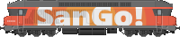
Locomotive diesel puissante, affectée aux liaisons longue distance sur les axes non électrifiés.
Locomotives électriques
BB 8500
Dernière MAJ : 22/02/2026
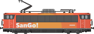
Locomotive électrique monocourant 1500 V, utilisée pour les liaisons classiques dans le sud de la France.
BB 9200
Dernière MAJ : 22/02/2026
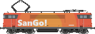
Locomotive électrique emblématique, fer de lance des services classiques SanGo! sur les grands axes électrifiés.
BB 9300
Dernière MAJ : 22/02/2026
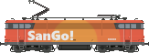
Locomotive électrique monocourant 1500 V, complétant la flotte électrique pour les dessertes sud.
Automoteurs diesel
X 2200
Dernière MAJ : 22/02/2026
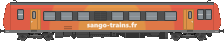
Autorail diesel utilisé sur les lignes secondaires non électrifiées à faible trafic.
Automotrices électriques
TGV PSE
Dernière MAJ : 22/02/2026
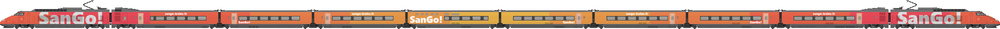
8 rames TGV PSE en fin de carrière de la SNCF ont été rachetées en 2020.
TGV PSE "Héritage"
Dernière MAJ : 30/08/2025
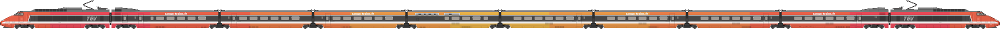
La rame n°8 (ex n°19 chez la SNCF) a reçu une livrée spéciale, dénommée "Héritage", arborant le dégradé SanGo! avec la découpe de la première livrée du TGV.
Z 7300
Dernière MAJ : 22/02/2026
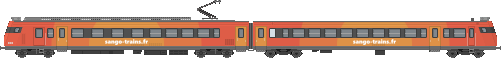
Ancienne
Voitures
Voitures Corail
Corail VTU
Dernière MAJ : 22/02/2026
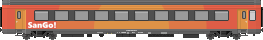
Voiture Corail à Tous Usages, colonne vertébrale du parc voyageurs SanGo! sur les grandes lignes classiques.
Corail VTU B10rtu
Dernière MAJ : 22/02/2026
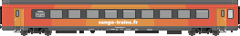
Variante 2ᵉ classe de la VTU, dotée de 10 compartiments.
Corail VU
Dernière MAJ : 22/02/2026
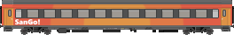
Voiture Corail Universelle, première génération du parc Corail.
Corail VU B6Dux
Dernière MAJ : 22/02/2026
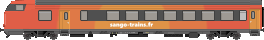
Voiture mixte 2ᵉ classe / fourgon, placée en extrémité de rame.
Corail MC76
Dernière MAJ : 22/02/2026
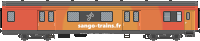
Voiture-bar Corail de 1976, assurant la restauration à bord des trains longue distance.
Rames réversibles
RIO
Dernière MAJ : 22/02/2026
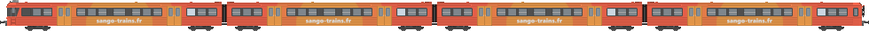
Rame Inox Omnibus, utilisée pour les dessertes omnibus et de banlieue.
RIO 88
Dernière MAJ : 22/02/2026
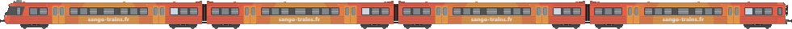
Version rénovée en 1988 de la RIO, avec intérieur modernisé.
RRR
Dernière MAJ : 22/02/2026
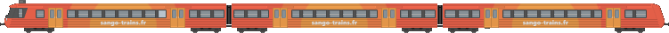
Rame Réversible Régionale, pour les dessertes régionales à moyenne capacité.
Remorques d'autorails
XR 6100
Dernière MAJ : 22/02/2026
Remorque d'autorail associée aux X 2200 sur les lignes secondaires.
XRx 6200
Dernière MAJ : 22/02/2026
Remorque d'autorail avec compartiment fourgon.
D'origine allemande
n-Wagen Bn
Dernière MAJ : 22/02/2026
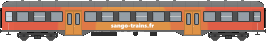
Voiture de banlieue allemande (Nahverkehrswagen) 2ᵉ classe, acquise pour les dessertes transfrontalières.
n-Wagen BDnrzf
Dernière MAJ : 22/02/2026
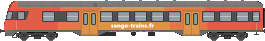
Voiture-pilote allemande avec compartiment fourgon, permettant la réversibilité des rames.